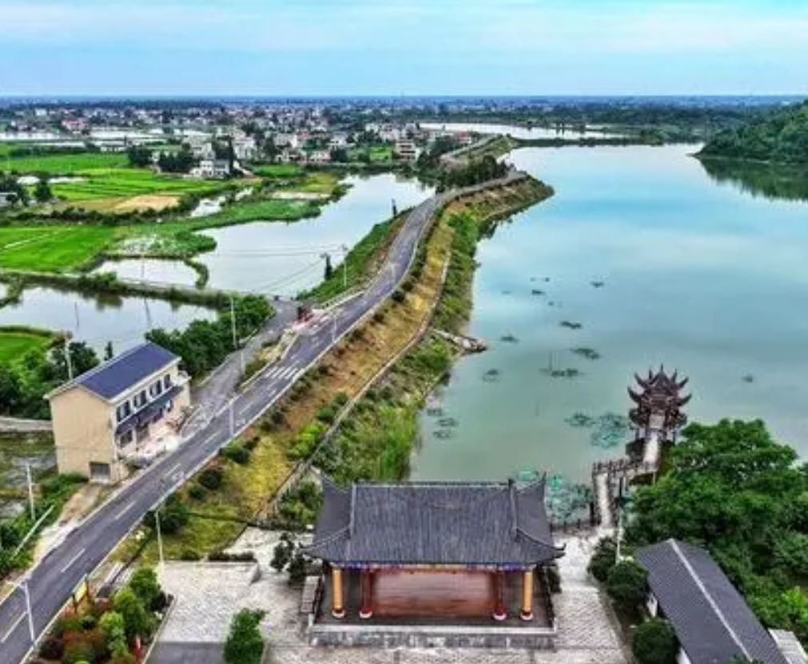

- 
-

-

一、生态大米
-
1、选址与土壤
生态大米种植通常选择在没有工业污染、土壤肥沃且富含有机质的地方。土壤肥沃，有机质含量高，为生态大米的生长提供了得天独厚的条件。
-
2、种植方式
生态大米种植过程中不使用化学合成的肥料、农药、激素以及转基因物质。相反，它采用有机肥、农家肥和纯中药制剂等天然物质来滋养土壤和稻谷。
在水稻种植过程中，采用生物壮秧剂进行调酸与消毒，使用保水灌溉和间歇灌溉相结合的方式，以确保水稻的健康生长。
-
3、病虫害管理
生态大米种植过程中，采用物理、生物和农业综合防治技术来控制病虫害。例如，利用天敌来防治害虫，或者采用鱼苗替代化学除草剂与杀虫剂，以减少对环境的污染。
二、 虾稻共生
-
1、养殖
稻虾米产业采用了稻田和虾塘结合的养殖模式，被称为稻虾共作。这种方式将水稻种植和淡水龙虾养殖相结合，形成一种天然的农业生态循环系统。在此系统中，龙虾生长的环境为水稻提供了有机养分，促生了营养丰富、口感鲜美的独特稻虾米。
2、原理
虾稻共生模式基于水稻和虾类的生态特点和需求，通过改造水稻田，构建一个生态系统，使水稻和虾类能够在这个系统中相互合作，共同生长。水稻为虾类提供遮荫、保温、保湿和防风等条件，而虾类则为水稻提供有机肥料、氮素、磷素等营养元素，同时帮助控制杂草和害虫，减少了农药和化肥的使用。
3、主要优势
1.提高产量和品质：虾稻共生模式能够显著提高水稻和虾类的产量和品质。2.节约资源：虾稻共生模式实现了水资源的循环利用和土壤肥力的提升，减少了灌溉和施肥的需求。 3.保护生态环境：虾稻共生模式减少了农药和化肥的使用，降低了农业面源污染的风险。4.增加经济效益：虾稻共生模式不仅提高了水稻和虾类的产量和品质，还增加了农产品的附加值。
三、水果（橘子柚子）
-
1、橘子
柑橘天然，自家种植，味美健康，两者兼得！阳光下的橘子味美如诗"。在这充满生机的季节，橘子树在阳光的滋养下茁壮成长，孕育出饱满且味道鲜美的橘子。它们不仅口感酸甜可口，还拥有着悠久的文化内涵。
-
2、柚子
柚子，生长在温暖湿润的环境中，对土壤和气候有着极高的适应性。这些绿色小巨人以其卓越的品质和丰富的营养价值，成为人们心中的健康之选。柚子不仅口感酸甜可口，还具有丰富的营养价值。它含有丰富的维生素C和纤维素，有助于提高免疫力、促进肠胃蠕动。此外，柚子还富含抗氧化物质，有助于抵抗衰老，维持健康。